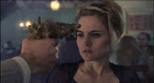

|
eXistenZ/A-,A |
|
Dimension/1998/97m/ANA
1.77 |
What
a playful film. It’s rare when the filmmaker’s delight is
communicated so well, and you can feel writer/director David
Cronenberg in every precious frame of eXistenZ.
I love the imaginative production
design on this film; building on a marriage of high tech and
organic elements, the combinations come as delightfully
unexpected. Cronenberg’s fascination with bizarrely primitive
tools in eXistenZ reminds viewers of the strange
sensibility that made Dead Ringers a unique experience.
 |
|
A new kind of
gun/game design. ©Dimension |
Allegra Geller is a premier game designer. Before marketing her
latest imaginative virtual reality creation, the distribution
company sets up a preview group to gauge reaction to the game.
Geller personally participates with the group and downloads the
adventure through game pods into the minds of the group. What is
reality and what is the game? The twists and turns of the
adventures turns as organically as the hybrid game pods,
slithering in and out of sexually suggestive game ports.
Everybody shows up in the action that moves at a frenetic pace.
If eXistenZ oozes a bit too much gelatin, I have no
problem forgiving the filmmaker his delight in excess. Every
twist and turn in eXistenZ stays consistent with its computer
game thematic structure. There are wildly sexual elements,
violence galore and a feast of gore, but through it all the
sense of humor remains dominant. At times I wanted to laugh out
loud but was caught by surprise by some serious seeming turn in
the texture of the film. Like the ultimate gamemaster,
Cronenberg plays with his audience, relishing the manipulation. eXistenZ
maintains its conceits perfectly. The audience never feels
tricked by the twists and turns of plot.
Allegra Geller is an excellent role for
Jennifer Jason Leigh. Leigh performances are often marked by
excessive energy that can conflict with the subtle elements of
her performances. Leigh can communicate so much with a mere
glance. She doesn’t need excess. The world in eXistenZ
is so charged that the actress simply goes with Cronenberg’s
flow and the result is an outstanding performance. Jude Law is
getting some extra duty in thinking man’s science fiction.
Law, excellent in Gattaca, combines well with Leigh. The
always impressive Ian Holm is on hand for a small eccentric role
and Willem Dafoe gets to display his entertaining quirkiness in
a small role.
This is truly a brilliant anamorphic
DVD transfer. The depth is simply amazing. Every detail comes to
home theater life with vividness appropriate to the computer
game theme of eXistenZ. Though a very dark movie, the
light output levels are well balanced; shadow detail is
outstanding, contrast provides punch and subtlety. Take a look
at the simplest elements; the weave in Jude Law’s sweater
replete with delicate shadings reflective of the lighting; or
the slimy texture of the charming two-headed mutant amphibian.
And you have to look far and wide for any evident of edge
enhancement, though if you hook into the game port and look real
close you might spy a sly and effective use of it. Though the
package information lists the soundtrack as Dolby Surround, it
is Dolby 5:1 Digital. The surround is powerful, active, and very
directional. Expect clarity of detail and full ambiance from eXistenZ
on DVD. This is one movie on which I would have loved a
commentary track with the director. The plotting and visuals are
so rich and Cronenberg’s imagination so fertile I can only
imagine pure joy in listening to his insights on the making of
this film. eXistenZ was a blast!
|
|